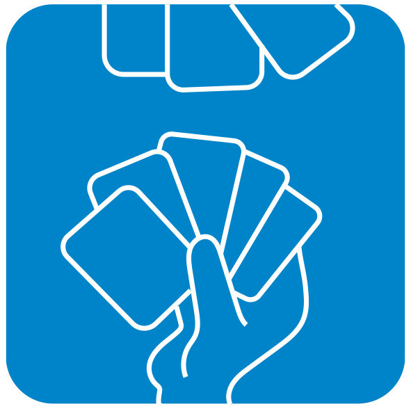

Mayor o menor?
@if(mostrarExplicacion){
Juego de Mayor y Menor con cartas
}
En este juego, se mostrará una carta y debes decidir si la próxima carta será mayor o menor en valor numérico. Acumula puntos por cada predicción correcta y pierde intentos por cada predicción incorrecta. El juego finaliza después de un número específico de intentos.
@if(!empezado){

}
Puntos:
{{ puntos }}
Carta Anterior
@if(cartaAnterior.src != ''){Carta Actual
Fallos: {{ fallos }}
Aciertos: {{ aciertos }}
Intentos: {{ intentos }}
Puntuación: {{ puntos }} | Juego finalizado!